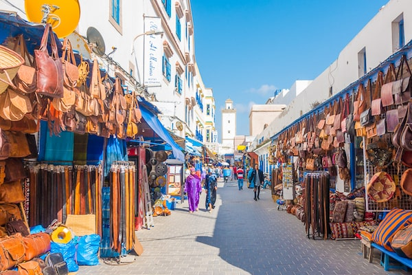
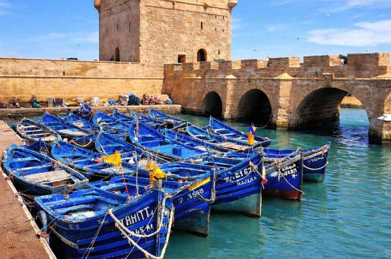
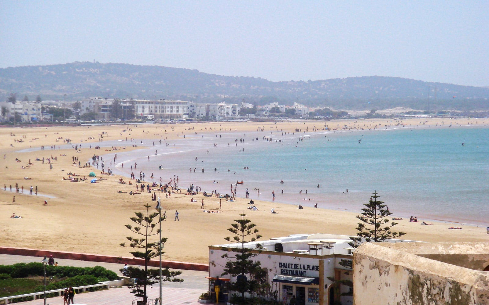
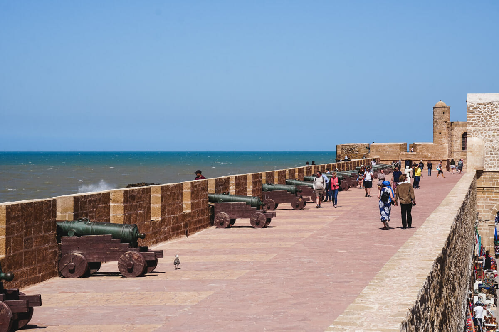
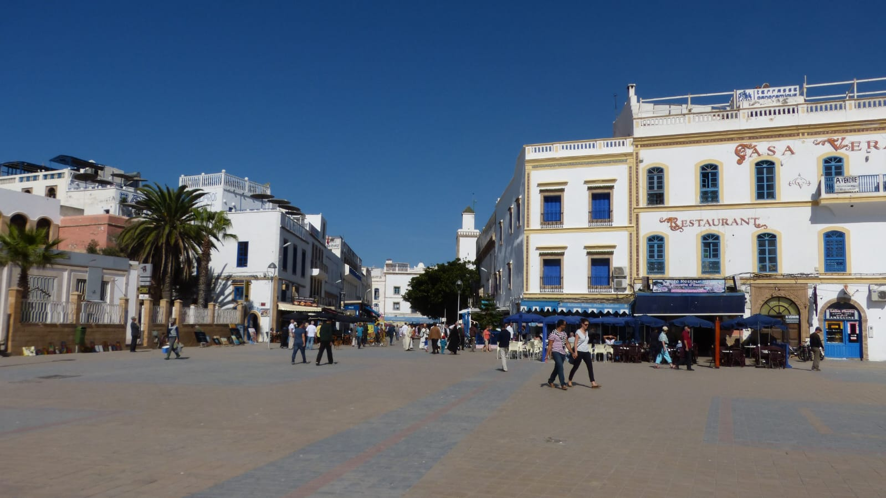
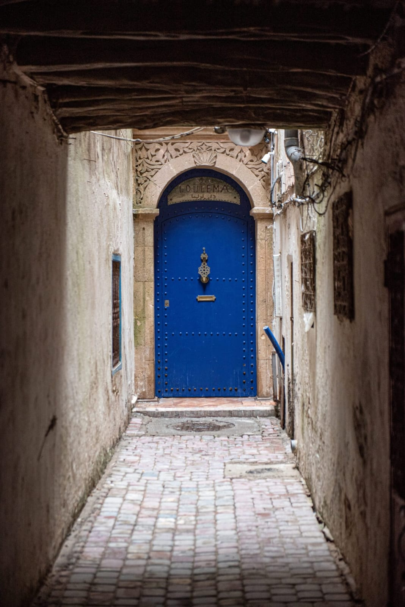

Un quartier historique célèbre pour son architecture traditionnelle, ses marchés artisanaux et son ambiance authentique.

la Skala du Port offre une vue panoramique sur l’océan Atlantique et le célèbre port de pêche d’Essaouira. C’est l’un des places les plus visités de la ville.

La plage d’Essaouira est un lieu apprécié pour son sable fin, son air marin et ses magnifiques paysages côtiers.

Les remparts protègent la ville depuis plusieurs siècles et offrent une vue magnifique sur l’océan Atlantique.

Située au cœur d’Essaouira, la Place Moulay Hassan est un lieu animé où se rencontrent habitants et visiteurs. Elle offre une belle vue sur l’océan et constitue un espace idéal pour se promener et profiter de l’ambiance de la ville.

Le Mellah est l’ancien quartier juif d’Essaouira. Il se distingue par son architecture historique, ses ruelles authentiques et son importance dans le patrimoine culturel de la ville.